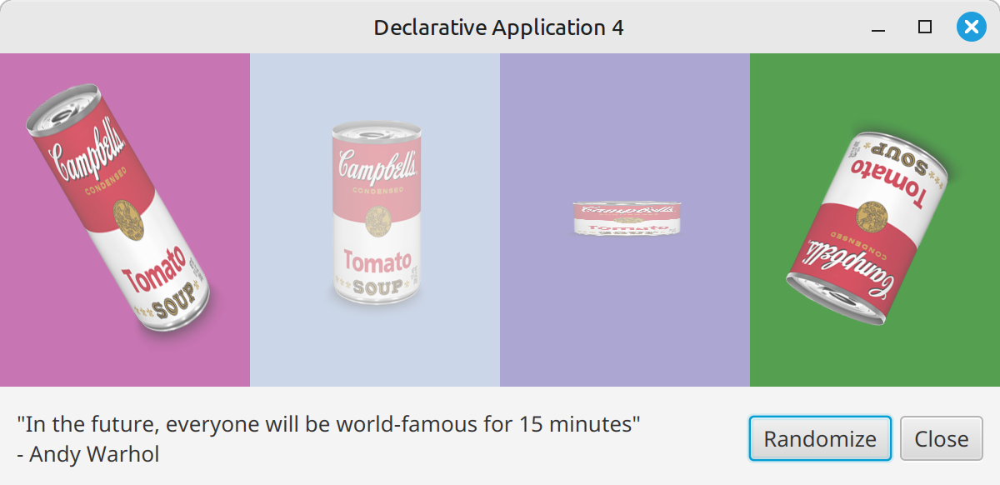
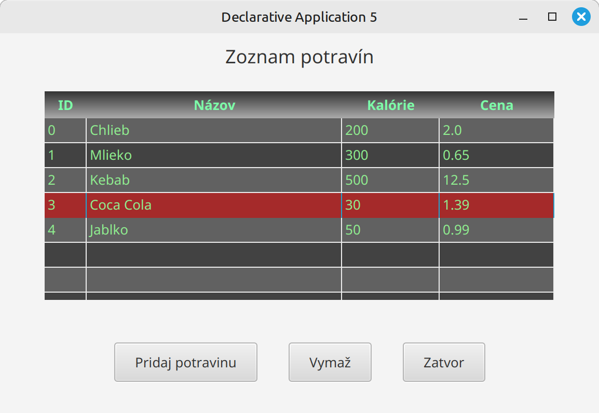

Cvičenie 15: JavaFX štýly¶
Toto cvičenie je zamerané na štýlovanie JavaFX aplikácií pomocou CSS
Základné CSS atribúty¶
Na teórii sme si vysvetlili základy štýlovania a CSS selektory. Ostáva nám ukázať si najbežnejšie CSS atribúty:
| Atribút | Popis | Príklad |
|---|---|---|
-fx-background-color |
Farba pozadia | -fx-background-color: red; |
-fx-text-fill |
Farba textu | -fx-text-fill: white; |
-fx-font-size |
Veľkosť písma | -fx-font-size: 16px; |
-fx-font-family |
Typ písma | -fx-font-family: "Arial"; |
-fx-font-weight |
Hrúbka písma | -fx-font-weight: bold; |
-fx-padding |
Vnútorné odsadenie | -fx-padding: 10; |
-fx-background-radius |
Zaoblenie rohov pozadia | -fx-background-radius: 5; |
-fx-border-color |
Farba okraja | -fx-border-color: black; |
-fx-border-width |
Hrúbka okraja | -fx-border-width: 2; |
-fx-border-radius |
Zaoblenie okraja | -fx-border-radius: 5; |
-fx-alignment |
Zarovnanie obsahu | -fx-alignment: center; |
-fx-spacing |
Medzera medzi prvkami (VBox/HBox) | -fx-spacing: 10; |
-fx-opacity |
Priehľadnosť | -fx-opacity: 0.5; |
-fx-cursor |
Typ kurzora | -fx-cursor: hand; |
-fx-effect |
Efekty (tieň, blur) | -fx-effect: dropshadow(...); |
-fx-background-insets |
Odsadenie pozadia | -fx-background-insets: 5; |
-fx-border-insets |
Odsadenie okraja | -fx-border-insets: 5; |
-fx-underline |
Podčiarknutie textu | -fx-underline: true; |
-fx-line-spacing |
Medzera medzi riadkami | -fx-line-spacing: 5; |
-fx-wrap-text |
Zalomenie textu | -fx-wrap-text: true; |
-fx-content-display |
Pozícia grafiky voči textu | -fx-content-display: top; |
-fx-graphic-text-gap |
Medzera medzi ikonou a textom | -fx-graphic-text-gap: 10; |
-fx-background-image |
Obrázok pozadia | -fx-background-image: url("img.png"); |
-fx-background-repeat |
Opakovanie obrázka | -fx-background-repeat: no-repeat; |
-fx-background-position |
Pozícia obrázka | -fx-background-position: center; |
-fx-background-size |
Veľkosť obrázka | -fx-background-size: cover; |
-fx-border-style |
Štýl okraja | -fx-border-style: solid; |
-fx-rotate |
Rotácia prvku | -fx-rotate: -20; |
-fx-scale-x |
Zmena mierky X | -fx-scale-x: 250% |
-fx-scale-y |
Zmena mierky Y | -fx-scale-y: 250% |
Úlohy¶
Úloha 15.1: Premena jednotiek teploty
Vytvorte .css súbor so štýlmi tak, aby úloha 14.1 vyzerala nasledovne:
{kind=link}
Použite nasledovné CSS atribúty:
-fx-text-fill-fx-font-size-fx-font-weight-fx-opacity-fx-border-color-fx-background-image-fx-background-size
Detaily:
- Farba textu #930b1e
- Veľkosť textu 20, hrúbka bold
- Priesvitnosť
text-fieldkomponentov 0.8 - Obrázok pozadia calculator.jpeg
{kind=link}
Úloha 15.2: Registrácia užívateľa
Pridajte inline štýly do úlohy 14.2 tak, aby aplikácia vyzerala nasledovne:
{kind=link}
Použite nasledovné CSS atribúty:
-fx-text-fill-fx-font-family-fx-border-color-fx-font-family-fx-background-radius-fx-border-radius
Detaily:
- Farby: green, red, brown a blue
- Font family: Serif
- Radius: 7px
Úloha 15.3: Oznam
Vytvorte .css súbor so štýlmi tak, aby úloha 14.3 vyzerala nasledovne:
{kind=link}
Použite nasledovné CSS atribúty:
-fx-background-image-fx-background-size-fx-effect-fx-text-fill-fx-font-weight-fx-font-family-fx-background-color-fx-font-size-fx-border-color-fx-rotate
Detaily:
- Farba nadpisu:
#b80101 - Efekt tieňa:
dropshadow(gaussian, #dee1ea, 20, 0.9, 0, 0) - Farba priesvitného pozadia tlačidla a text-area:
#FFFA - Obrázok pozadia ele-wallpaper2.jpeg
{kind=link}
Priesvitné pozadie do text-area sa robí trochu komplikovanejšie, skúste pohľadať na internete, ako
Skúste animovať logo školy tak sa pri prechode myšou vyrovnalo a pri kliknutí zväčšilo. Na plynulý prechod je potrebné použiť OpenFX verziu 23.
Úloha 15.4: Andy Warhol
Upravte úlohu 14.4 tak, aby sa náhodne generovala nie len farba pozadia, ale aj:
- šírka a výška plechoviek
- priehľadnosť
- natočenie

Úloha 15.5: Jedálniček
Vytvorte .css súbor so štýlmi tak, aby úloha 14.5 vyzerala nasledovne:

Použite nasledovné CSS atribúty:
-fx-background-color-fx-text-fill-fx-padding(na HBox a tlačidlá)-fx-spacing(na HBox, medzery medzi tlačidlami)-fx-alignment(na HBox, vycentruje tlačidlá)
Na štýlovanie TableView viete využiť nasledovné CSS selektory:
.table-view.table-view:focused.table-view .column-header-background.table-view .column-header-background .label.table-view .column-header.table-view .table-cell.table-row-cell.table-row-cell:odd.table-row-cell:selected
Detaily:
- farba vyznačeného riadky tabuľky:
brown - farby pozadí riadkov:
#616161; #424242; - farebný prechod v hlavičke:
linear-gradient(#333 0%, #aaa 100%); - padding tlačidiel:
10px 20px 10px 20px;